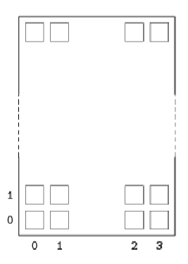

<pre><code>

An AirplaneFlight object is used to keep track of seats booked on a flight, using a two-dimensional array of strings. An empty string denotes a seat that is still available; otherwise, the string is the passenger's name.

After a flight is fully booked, it maintains a waiting list of names. If any passenger cancels, the first name on the waiting list will replace the person that cancels.

The seats on a small airplane can be pictured as follows:
	<br><br>

Suppose a two-dimensional array, seats, represents the status of seats on a flight. If seats[1][2] equals the empty string, that seat is available; otherwise, seats[1][2] contains the name of a passenger and is not available.

On this flight, seats[0][0]...seats[0][3] represent the front row of an airplane.

The information for a flight is contained in the AirplaneFlight class as declared below.>

public class AirplaneFlight
{
	/** The seats on the airplane.
	 * 	Each seat contains the name of a passenger
	 * 	An empty string signals that the seat is available.
	 */
	private String[][] seats;

	public static final int SEATS_PER_ROW = 4;
	public static final int NUM_ROWS = < some positive integer >;

	/** The list of names on the waiting list. */
	private List<String> waitList;

	/** @return true if seat with specified seat
	 *  number is available; false otherwise
	 *  @param rowNum the row number
	 *  @param seatNum the seat number
	 */
	public boolean isAvailable(int rowNum, int seatNum)
	{ /* implementation not shown */ }

	/** @return true if seat with specified row and seat
	 *  number is a window seat; false otherwise
	 *  @param seatNum the seat number
	 */
	public boolean isWindowSeat(int seatNum)
	{ /* implementation not shown */ }

	/** Reserves window seat for passenger with specified
	 *  name, if a window seat is available.
	 *  Returns true if a window seat was found; false otherwise.
	 *  @param name the passenger name
	 *  @return true if a window seat was found; false otherwise
	 */
	public boolean bookWindowSeat(String name)
	{ /* to be implemented in part (a) */ }

	/** Finds the seat that is currently reserved for the passenger
	 *  with the specified name. Replaces that name with the name of
	 *  the first person on the waiting list.
	 *  Precondition:  The specified name represents a passenger on
	 *               this flight.
	 *  @param name the name to be replaced
	 */
	public void cancelAndReplace(String name)
	{ /* to be implemented in part (b) */ }

	//There may be instance variables, constructors, and methods
	//not shown.
}

Part (a)
Write the AirplaneFlight method bookWindowSeat. This method searches through all the seats to see if it can find an available window seat. If it does, it reserves that seat for the name provided in its parameter, and it returns true. If there is no window seat available, the method returns false.

Complete method bookWindowSeat below.

/** Reserves window seat for passenger with specified
 *  name, if a window seat is available.
 *  Returns true if a window seat was found; false otherwise.
 *  @param name the passenger name
 *  @return true if a window seat was found; false otherwise
 */
public boolean bookWindowSeat(String name)

Part (b)
Write the AirplaneFlight method cancelAndReplace. Method cancelAndReplace searches through the seats to locate the name in its parameter. It then removes the first name in the waitList and replaces the name in the seat with that name from the waitList. Note that a precondition of this method is that the name given in the parameter is in one of the seats, and that waitList contains at least one name.

Complete method cancelAndReplace below.

/** Finds the seat that is currently reserved for the passenger
 *  with the specified name. Replaces that name with the name of
 *  the first person on the waiting list.
 *  Precondition:  The specified name represents a passenger on
 *               this flight.
 *  @param name the name to be replaced
 */
public void cancelAndReplace(String name)

</code></pre>
